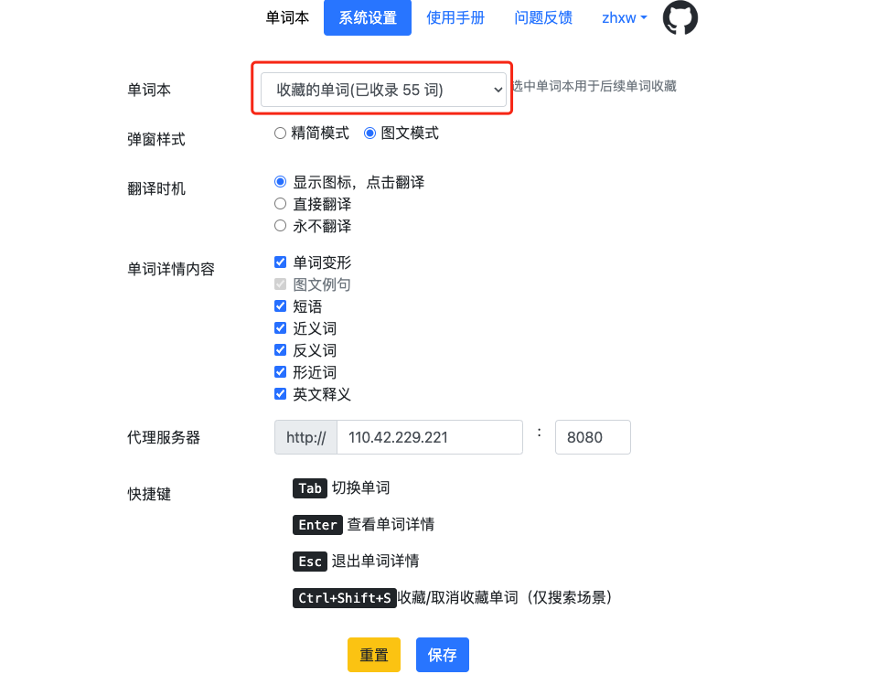
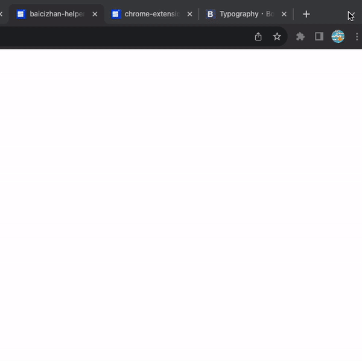
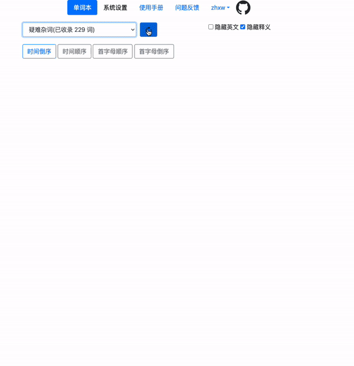
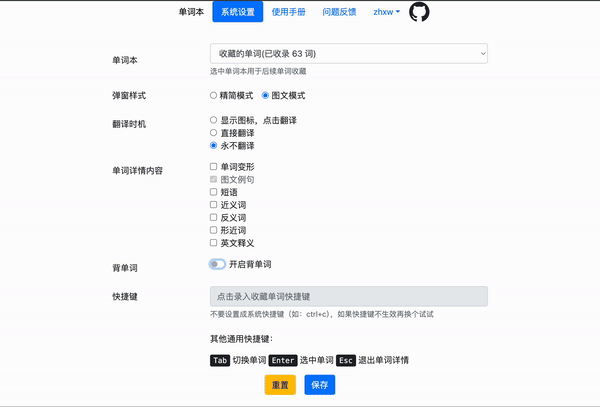

登录
1. 选中导航栏「请登录」列，下拉点击「登录」按钮
2. 填写手机号码，点击获取验证码并填写，点击「登录」。成功后页面显示账户昵称。
选择单词本
1. 登录成功后，设置页「单词本」会显示登录账户的单词本列表，选择其中一个单词本用于后续收藏单词本。点击下方「保存」按钮进行保存。
其他配置
1，弹窗样式
2，翻译时机
3，单词详情内容：显示单词详情时展示的内容项，勾选后显示（如果单词无该项则也不展示）。具体项如下：
选择单词翻译并收藏
浏览相关页面时，使用鼠标划词后会显示一个图标（使用默认配置时），点击该图标后会 弹出一个翻译内容的弹窗，点击星形图标可收藏（取消收藏）单词。

搜索单词并收藏
点击浏览器右上角「扩展程序」图标，点击「百词斩助手」扩展，进入搜索页面。 输入搜索的单词，点击搜索按钮或者输入回车键，显示搜索结果，点击单词进入 详情（详情内容与上述「单词详情内容」设置有关）。点击星形图标可收藏（取消收藏）单词。
管理单词本内容
进入选项页面，选择要查看的单词本，点击右侧刷新按钮获取单词本最新内容。 下方四个按钮可以改变单词本中单词的排序规则，具体排序如文字描述。 点击单词可以展示单词详情内容（详情内容与上述「单词详情内容」设置有关）。 点击每行单词前星形图标可取消收藏单词。 勾中「隐藏释义」、「隐藏英文」选项，可以隐藏单词释义和原文。
背单词
进入选项页面，打开「背单词」选项并保存。点击「去背单词」按钮进入学习页面。 可以选择学习新单词或者复习今日已学单词，学习完毕后会将记录同步到百词斩 APP 中。
